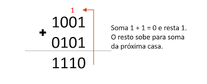
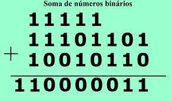
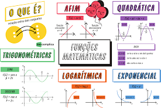

dificuldades
Cálculo de binários
Por mais que eu tenha me dado bem com conversões de sistemas numéricos,
não tive a mesma sorte com cálculo de binários. O complicado é que esse conteúdo acaba se
tornando confuso, já que são muitos e muitos números iguais um do lado do outro, então
se perder é fácil e se manter focado para resolver é difícil, um simples erro pode fazer
ter que refazer a conta inteira, assim pessoas que não conseguem se concentrar tanto acabam
tendo muito mais dificuldade nesse conteúdo e meio que foi meu problema também. Além de ser
um conteúdo bem confuso de resolver, que já é piorado pelos fatos citados anteriormente.
Acho que a minha dificuldade foi não ter conseguido decorar a matéria eu tentei decorar o
conteúdo, mas por mais que eu lesse não entrava na minha cabeça, e então eu não sabia como
fazer, então eu tentei transformar os binários em decimais, somá-los e depois retransformá-los
em binários, mas não deu certo. No final eu acabei fazendo a prova desse jeito e não vi
necessidade de voltar atrás para rever desse conteúdo. Eu também não demonstrei tanto
interesse nessa parte do conteúdo.
Alguns exemplos para entener meu ponto:

Parece fácil, porém é confuso, o problema começa no próximo exemplo:

Criar vontade para resolver algo desse nível já é um desafio, é um conteúdo em que não se
tem interesse em cima.
Funções
Funções era um conteudo que eu já tinha visto e não tive dificuldade
de estudá-lo
, porém agora nesse ano as operações me pegaram, pois eu novamente não sabia fazê-las.
Um dos problemas era que eu sabia a teoria desse conteúdo, mas não sabia como aplicar na prática,
pois eu me confundia entre as operações e/ou não sabia o que fazer em certas situações.
Me peguei no meio do conteúdo e fiquei um bom tempo fazendo as operações errado até perceber
que estava trocando as peças, o que acabou me consumindo um tempinho de resolução de questões.
No final eu percebi meu erro e reaprendi o conteúdo, decorando do jeito certo.
Posso dizer também que eu quase me peguei na mesma situação com conjuntos, mas no final eu
vi que poderia acabar dando errado para mim e corrigi o erro no começo, e assim não fiquei
com esse problema denovo. Em suma, esses conteúdos apresentaram dificuldades por terem que decorar
muita coisa para fazer as operações, qualquer mínimo erro é suficiente para arruinar a conta
e se você não saber as regras os cálculos não há como acertar, e sem ter tanto interesse acaba
se tornando aind mais difícil de aprender esses conteúdos grandes. Matemática nunca foi uma matéria
que eu tinha tanto interesse em pesquisar sobre, mas às vezes eu me obrigava por um bem maior.
